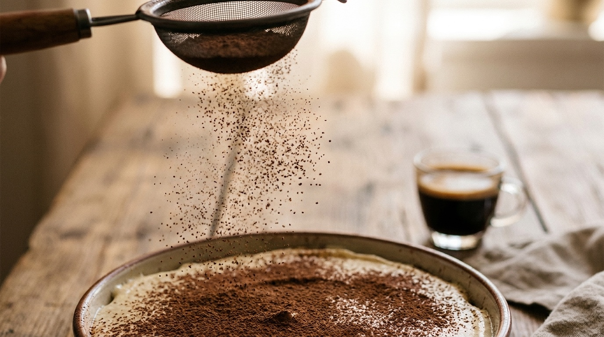
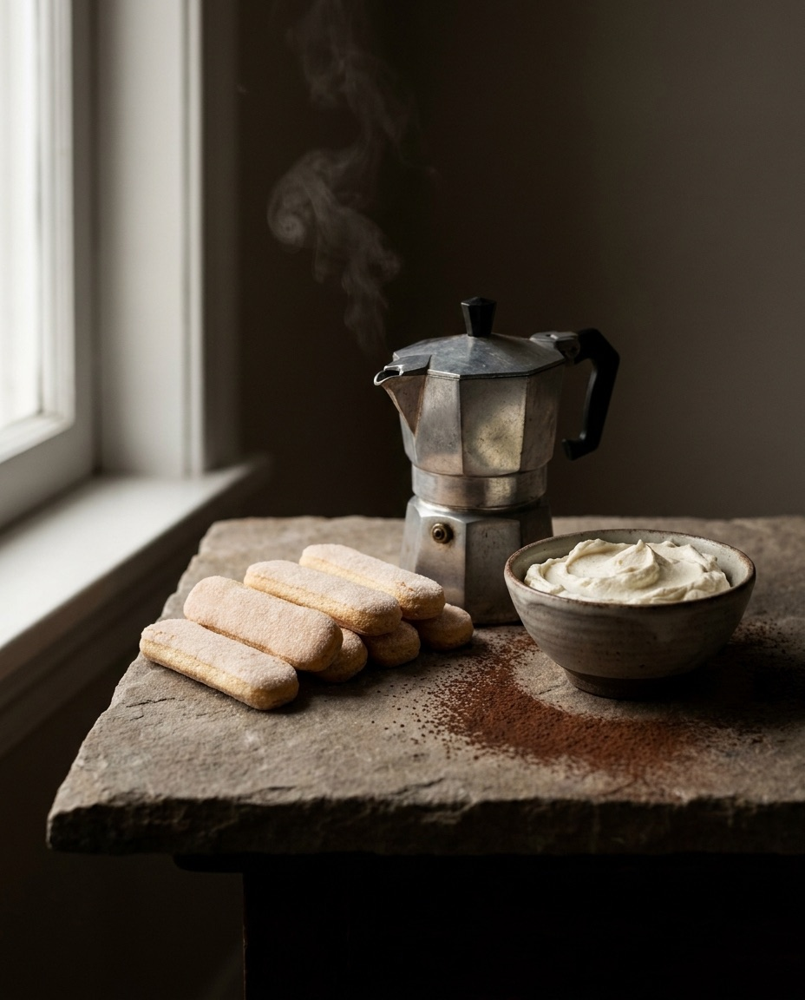
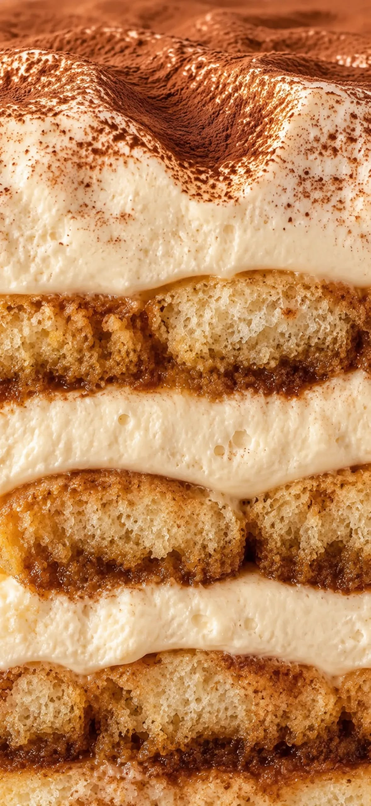
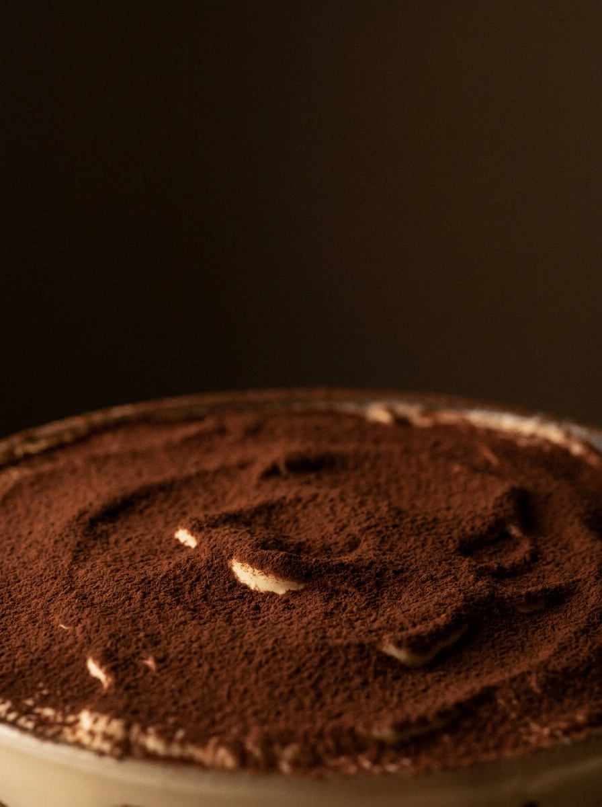
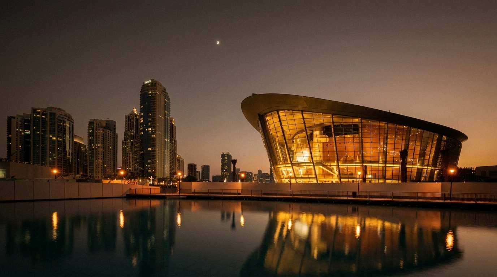
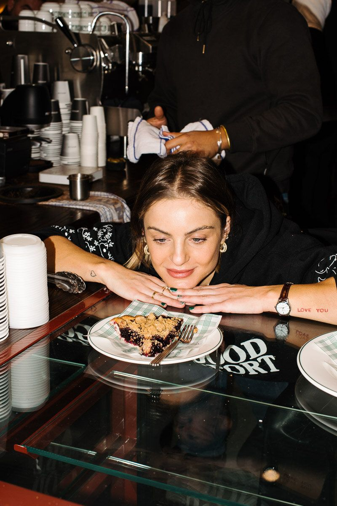
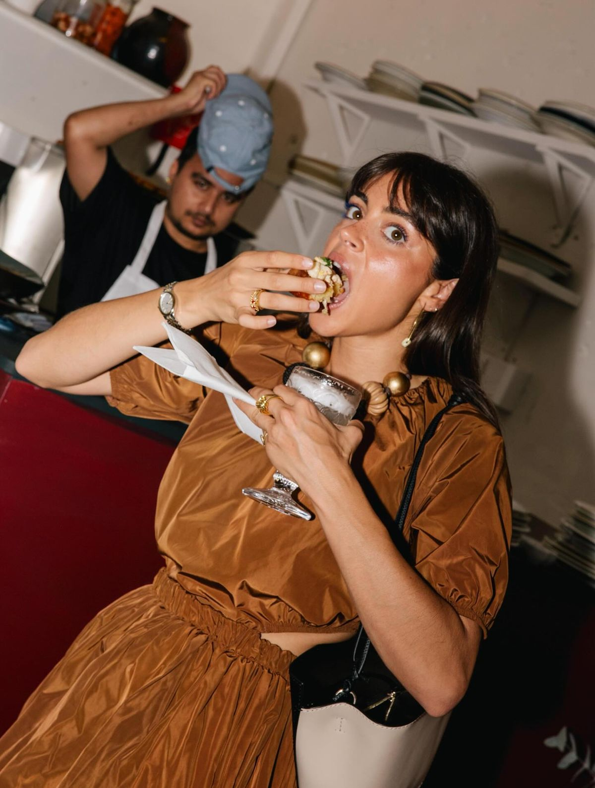
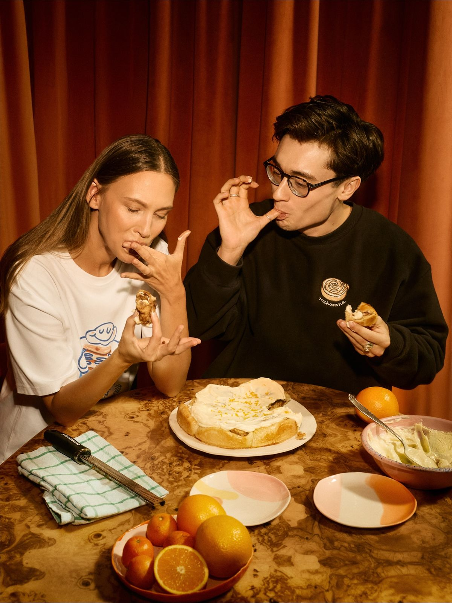
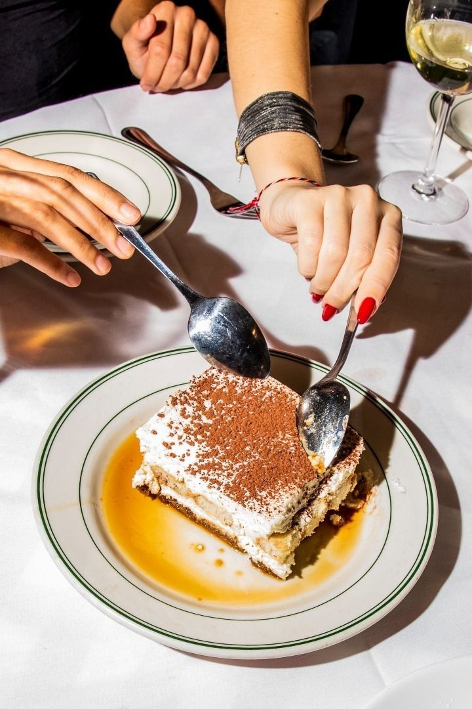
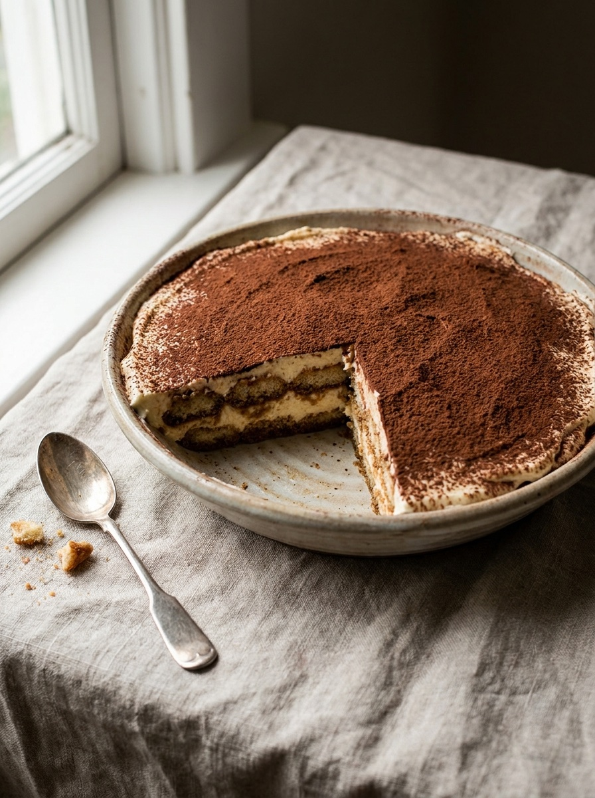

Home
Where people check us before they come.
- What we post
- The grid, Reels, Stories, highlights: menu, location, hours
- Who it’s for
- Everyone. This is the brand’s front door.
A horizontal story — part two
Scroll, swipe or use ← → to move through it.

Treviso Tiramisù · Dubai
The strategy.
How the idea works.
The market · The conversation · The location
Ask Google for the best tiramisù in Dubai. It answers with a restaurant dessert. The best-known tiramisù in the city is one dish on a restaurant menu. None of the names comes from Treviso.
This is what Dubai sees today
AI Overview
“Public at the Dubai Mall serves one of the most viral and talked-about tiramisus in Dubai, featuring a creamy texture and tableside finish…”
Top tiramisu spots in Dubai
Public
Tiramisu Café
The Guild
Treviso Tiramisù
Three things we learn:
In our neighbourhood · Downtown
Across the city
All checked open, Sept 2026. Torno Subito, still on older lists, closed in Nov 2024. Photos: the venues’ own, via That Foodie Chick (Jul 2024) — for this presentation only.
Coffee. Balance. Texture.
Origin — the foundation underneath
Strong coffee. Not too sweet. Creamy mascarpone. Origin builds trust, but it is not what people talk about first.
So we lead with the taste, and we let the origin prove it.
One signature product.
Made to be filmed.
One real creator moment.
Easy to get, anywhere in the city.
Every mechanic in this strategy follows these four rules.
Sources: FACT Magazine; Arab News — the Fix “Dubai chocolate” case.
18.7M
came to Dubai in 2024.
“What should we try here?”
Nearby
live and go out in the area.
“Where do we go tonight?”
Next door
from Business Bay and DIFC.
“What do we bring to the meeting?”
250,000
in one season.
“Where do we go after the show?”
Sources: Dubai Media Office (international overnight visitors, 2024); Khaleej Times (Dubai Opera 2023–24 season).
Ambition · Position · Signature · Audience · Journey
Today, Google answers “Where is the best tiramisù in Dubai?” without us.
The origin is the proof. The experience is what people remember.
We never say “we invented it.” We say, “this is where it comes from.”
Tiramisù made in front of you. Layered to order. Strong coffee. Cocoa, last. Many restaurants finish tiramisù at the table. Here, tiramisù is the whole house: the Treviso way, in front of you, in more than 20 flavours.
Not a show at the table. A tiramisù house at work.



[Placeholder — real product footage]
Visitors and Downtown explorers.
The goal is the first visit.
Residents, families and friends.
The goal is the habit, the evening, the gift.
Creators, chefs and food media.
The goal is that others say it for us.

Too late for dinner. Just right for tiramisù and coffee.
Dubai Opera is our neighbour. After the show, we are the last scene of the night. Show your ticket: [post-show offer, to be agreed with Dubai Opera] Content series: The Final Act, real guests after the show, still in their evening clothes.
Dubai Opera
The Final Act
Treviso
Tiramisù
Admit one
first bite
Dubai Opera — conceptual visual
Treviso is the home of tiramisù.
Teasers · Origin films · PR
I want to try it.
Product content · Creators
I visit, or I order.
Paid footfall · Codes · The activation
This is my tiramisù place.
The second bite · Gifting · Community
The teaser · The number · The reaction · The creators · The second bite
It is not only a launch line. It is:
Every first order comes with a numbered card: FIRST BITE № 214. № 001 goes to the first person in line, not to a celebrity. № 100 · № 1,000 · № 10,000: every milestone is content, and a story for the press.
The counter is also our scoreboard. It shows how many people came.
FIRST BITE
№ 001
The first person in line.
FIRST BITE
№ 041
You are invited to your first bite.
FIRST BITE
№ 214
With every first order.
FIRST BITE
№ 1,000
A milestone. A story for the press.
The pause. The expression. The second spoon.
This is the format for every First Bite video: creators, guests, staff. No script. No “it’s so good.”
We film the silence before the words.



Photography direction references
Our direction for Nadia Werner’s creators, so every voice tells one story.
Bring your number back and your second bite comes with [return offer: e.g. a coffee pairing or a new flavour, to be agreed].
This is how a first visit becomes a habit.

Each platform, one job · Each post, a series
Home
Where people check us before they come.
Discovery
Where new people find us.
Push
Our best content, shown to the right people near us.
Decision
Where “near me” ends.
Run by Treviso, with our direction
Second door
Tiramisù at home, gifts to others.
Run by Treviso, with our direction
Google builds its answer from three sources. We work on all three.
We won’t pass Public’s 7,700 reviews in 90 days. Being in the answer is realistic. Leading it is the Year 1 goal.
1 · Creator videos
Nadia Werner’s creators say “best tiramisù in Dubai” and “Treviso Tiramisù” in the video and the caption. The list includes the creators Google already quotes.
2 · Food lists & blogs
PR sends the story to the people who write the lists: Emirates Woman, BBC Good Food ME, Curly Tales, Time Out Dubai, What’s On, food bloggers.
3 · Google Maps
Photos, hours and menu from day one. We ask every guest for a review, and we answer every review.
12 posts a month, 3 a week, same days and same quality. Reels are edited for Instagram and TikTok separately.
The Product
Make people hungry
Reels, carousels 4 / month
The First Bite
Prove it
Reels, Stories 4 / month
In Dubai
Make it relevant
Reels, Stories 2 / month
The Origin
Build trust
Carousels, short films 2 / month
Five channels · Two gifts · Paid · The first 90 days · Measurement
creates the moment.
Treviso + partnersgives it credibility.
Nadia Wernerstart the conversation.
Nadia Wernerkeeps it alive.
Inhausbrings people through the door.
InhausInhaus holds the story, so every channel says the same thing.
For creators and press. Sent by Nadia Werner before opening. A numbered box: a jar of the classic, a card that says “Your first bite wasn’t your first bite,” and an invitation. The unboxing goes online. The first bite happens at the venue, at the Espresso Atelier, on camera.
№ 012
Your first bite
wasn’t your
first bite.
FIRST BITE
№ 012
You are invited.
You don’t arrive empty-handed.
The business plan already includes takeaway, breakfast boxes and corporate catering. Gifting gives them a story.

Paid starts on opening day, using only content that already worked in the four weeks before.
Codes: one code per campaign and one per creator (FIRSTBITE for dine-in), so every visit has a source.
Sponsored
Your first bite
is waiting.
Sponsored
The original,
on us
to start.
Paid off Paid on — from opening day
Now → week −3
Curiosity. First followers.
Weeks −3 → −2
People understand who we are.
Weeks −2 → opening
A list of people waiting. Creator content ready.
Opening week · [OPENING DATE]
A crowd, a queue, a moment.
Weeks 2–4
Steady visits.
Weeks 5–8
Evenings become a habit.
Weeks 9–12
Repeat visits. First gift orders.
Day 90
We review the numbers together and plan the next season.
One question matters most:
Every month we check Google’s answer and the main lists. Today we are not in them.
“Treviso tiramisù” over time, compared with Public and Tiramisu Café (Google Trends).
How many first bites. Our live footfall count.
№ ____Views, saves, shares. Profile visits, directions, menu views.
Codes used (per campaign and per creator), second bites, reviews, gift orders.
Day 90: Treviso Tiramisù is in the answer.
Treviso Tiramisù · Dubai · [OPENING DATE]
Prepared by